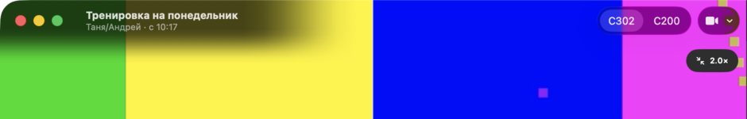
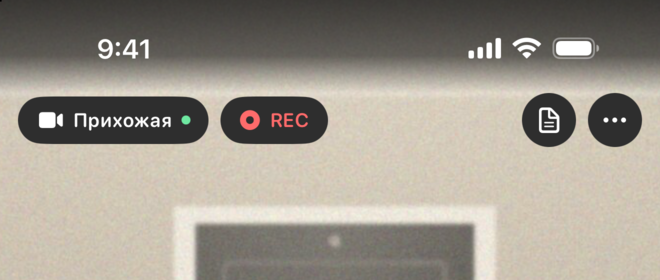

Что затемнить, когда кадр заходит под заголовок и часы
Приближенный кадр теперь заходит под панель окна на Mac и под часы на iPhone. Сейчас там затенение, которое не понравилось. Ниже варианты: по одному для Mac и для iPhone, их можно выбрать независимо. Макеты нарисованы в натуральную величину (1 px = 1 pt), фон — кадр вашей камеры (переключается сверху: светлая комната, ночь, демо-прихожая).
Кнопки окна на Mac в макете — приближение к системному стеклу macOS 26, в приложении они будут настоящими. Выбранный вариант я сделаю в приложении и покажу скриншоты.


Mac — заголовок окна над кадром
Кадр приближен и уходит под панель окна: слева светофор и название тренировки, справа кнопки камер. Выберите, как читать название.
iPhone — часы и батарея над кадром
Кадр приближен и уходит под часы. Плашки верхней панели непрозрачные, им затенение не нужно — вопрос только про строку состояния.